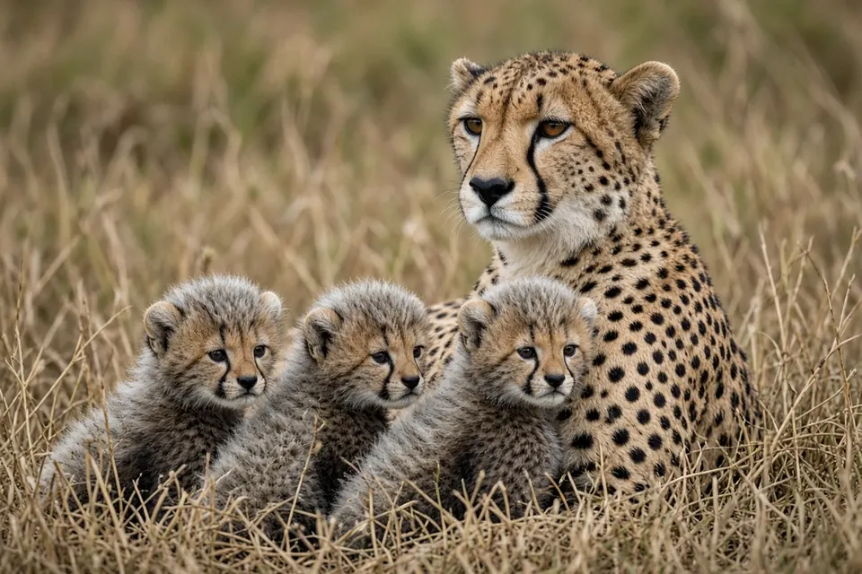

Home › Blog › Why do so few cheetah cubs survive?
Why do so few cheetah cubs survive? Cub mortality, predators and what field studies show
In the best known study, on the Serengeti Plains of Tanzania, a newborn cheetah cub had only about a 4.8% chance of reaching independence. Predators caused nearly three quarters of cub deaths, and lions made most of those kills, with spotted hyenas also taking many cubs once they left the den. But the Serengeti is not the whole story: in the Kgalagadi Transfrontier Park in southern Africa, cub survival was about seven times higher, and lions were not found to be involved in cub deaths.
The short answer in numbers
Karen Laurenson followed cheetah mothers and their litters on the Serengeti Plains and published the results in the Journal of Zoology in 1994. Her figures are still the ones most often quoted:
| Stage | What happened on the Serengeti Plains |
|---|---|
| Birth to about 8 weeks (in the lair) | About 72% of litters died before the cubs first left the lair |
| 8 weeks to 14 months | About 83% of the cubs that did emerge died before adolescence |
| Overall | A cub's estimated chance of reaching independence at birth: 4.8% |
| Main cause | Predation, 73% of all cub deaths; about 78% of those kills were by lions |
Laurenson described this as extremely high compared with other large mammals. For context on how many cubs a mother has to begin with, see the cheetah quick facts.
Inside the lair: the first eight weeks
Cheetah mothers raise their cubs alone, keeping very young cubs hidden in a lair while they go off to hunt. In Laurenson's study, lions were the main cause of death at this stage. Not every loss was a kill, though. Some cubs starved after their mothers abandoned them, and others died in grass fires or bad weather.
The risk did not end when the cubs came out. The study found that the instantaneous death rate was highest straight after the cubs emerged from the lair, when they began following their mother across open plains.

After the lair: lions and hyenas
Once cubs were moving with their mother, predation accounted for virtually all of the deaths that followed. At this stage lions and spotted hyenas took roughly the same share of cubs.
Mothers are not passive. Laurenson found that how vigilant a mother was, and how much antipredator behavior she showed, mirrored how vulnerable her cubs were at each age. Whether a mother responded aggressively to a predator also depended on which predator it was. A cheetah weighs far less than a lion, so a mother's options are limited, which helps explain why vigilance matters so much.
Cheetahs work hard to avoid lions and hyenas
Sarah Durant tested how cheetahs react to the threat of larger carnivores using audio playbacks, published in Behavioral Ecology in 2000. When she played lion or hyena calls near Serengeti cheetahs, they actively moved away, compared with control trials where no sound was played.
- After hearing competitors, cheetahs were much less likely to hunt, so they made fewer kills.
- They moved just as far after lion calls as after hyena calls, but spent more time looking at the loudspeaker and were less likely to make a kill after lion calls. Durant read this as cheetahs seeing lions as the bigger threat.
- Males, females and mothers responded alike, which suggested they were reacting mainly to competition rather than to a direct threat to cubs.
Avoiding lions therefore has a cost: time spent moving away or watching for danger is time not spent hunting, and a mother with cubs has to feed herself and them. Lions and hyenas also steal cheetah kills, as the cheetah hunting section explains.
Twenty years of Serengeti cheetahs
A longer view came from Durant, Marcella Kelly and Tim Caro in 2004, using a 20 year record of individually known cheetahs on the Serengeti Plains. They found that:
- Recruitment of young was negatively associated with the number of lions, linking the high predation seen in earlier studies to population dynamics.
- Recruitment rose with the number of Thomson's gazelles, the cheetah's main prey there, and fell with rainfall.
- Recruitment peaked when mothers were around 6 to 7 years old.
- Adolescents that stayed in temporary sibling groups survived better than those on their own, particularly males with sisters.
- Males had markedly lower survival than females.
Is the Serengeti typical?
Not necessarily. In 2014 Gus and Margie Mills reported on cheetahs in the Kgalagadi Transfrontier Park, which spans South Africa and Botswana. Cub survival there was about seven times higher than on the Serengeti Plains. Predation was still the most common cause of cub death, but lions were not found to be involved.
They also argued that a close look at the Serengeti data does not unequivocally prove that lions dominate as predators of cheetah cubs there, and that very high cub mortality may not be as widespread as is commonly believed. That matters because the Serengeti figures had fed a belief that areas with many large carnivores are poor places to conserve cheetahs.
The fair summary is that cheetah cubs can face extreme losses, especially on open plains with many lions and hyenas, but survival varies a lot between ecosystems.
Why this matters for conservation
Cheetahs are listed as Vulnerable, and most remaining populations are small. When few cubs survive, a population depends heavily on adult females living long enough to raise several litters. Knowing where and why cubs die helps decide which areas can sustain cheetahs, and the Kgalagadi results suggest that places with lions should not be written off. See how many cheetahs are left and big cat conservation.
Key takeaways
- On the Serengeti Plains, only about 4.8% of cheetah cubs were estimated to reach independence.
- Predation caused about 73% of cub deaths there, mostly by lions; hyenas took many cubs after they left the lair.
- Cheetahs move away from lion and hyena calls and hunt less afterwards.
- In the Kgalagadi, cub survival was about seven times higher and lions were not found to kill cubs.
Frequently asked questions
What percentage of cheetah cubs survive?
It depends on the place. On the Serengeti Plains, Laurenson (1994) estimated a newborn cub had a 4.8% chance of reaching independence. In the Kgalagadi Transfrontier Park, Mills and Mills (2014) found survival about seven times higher.
What kills cheetah cubs?
Mostly predators. On the Serengeti Plains predation caused 73.2% of cub deaths, and 78.2% of those kills were by lions. Spotted hyenas also took many cubs after they left the lair. Some cubs died of starvation after being abandoned, or in grass fires and bad weather (Laurenson 1994).
When are cheetah cubs most at risk?
Very early. About 72% of litters died before leaving the lair at around eight weeks, and the death rate was highest right after cubs emerged (Laurenson 1994).
Do lions kill cheetah cubs everywhere?
No. In the Kgalagadi Transfrontier Park, lions were not found to be involved in cub deaths, and the authors questioned whether lions clearly dominate cub predation even on the Serengeti (Mills and Mills 2014).
How do cheetah mothers protect their cubs?
By hiding young cubs in a lair, staying vigilant, and sometimes confronting predators. Mothers' vigilance matched how vulnerable their cubs were, and whether they responded aggressively depended on the predator species (Laurenson 1994).
Cite this page
APA: BigCatWise. (2026, October 20). Why do so few cheetah cubs survive?. Joshua Israel Ventures LLC. https://bigcatwise.com/blog/why-do-so-few-cheetah-cubs-survive.html
MLA: "Why do so few cheetah cubs survive?." BigCatWise, Joshua Israel Ventures LLC, 20 Oct. 2026, bigcatwise.com/blog/why-do-so-few-cheetah-cubs-survive.html.
Chicago: BigCatWise. "Why do so few cheetah cubs survive?." Joshua Israel Ventures LLC. Last modified October 20, 2026. https://bigcatwise.com/blog/why-do-so-few-cheetah-cubs-survive.html.
Please check the date you accessed the page and adjust to your teacher's or journal's style guide.
Sources
- Laurenson (1994) High juvenile mortality in cheetahs (Acinonyx jubatus) and its consequences for maternal care, Journal of Zoology 234(3): 387-408. DOI 10.1111/j.1469-7998.1994.tb04855.x
- Durant (2000) Living with the enemy: avoidance of hyenas and lions by cheetahs in the Serengeti, Behavioral Ecology 11(6): 624-632. DOI 10.1093/beheco/11.6.624
- Durant, Kelly and Caro (2004) Factors affecting life and death in Serengeti cheetahs: environment, age, and sociality, Behavioral Ecology 15(1): 11-22. DOI 10.1093/beheco/arg098
- Mills and Mills (2014) Cheetah cub survival revisited: a re-evaluation of the role of predation, especially by lions, and implications for conservation, Journal of Zoology 292(2): 136-141. DOI 10.1111/jzo.12087
- IUCN SSC Cat Specialist Group: Cheetah
Figures are rounded summaries of the sources above. Wild populations are hard to count, so estimates change as new surveys are published.